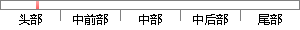

NX 软件是集 CAD/CAE/CAM 一体化的三维三处化软件，它的发展过程代表了图形软件的开发从探索走向成熟的过程，它是当今世界最先进的计算机辅助设计、分析和制造软件之一，广泛应用于航空、航天、汽车、机械和电子等工业领域，因此本图纸选择此软件进行3D建模、出工程图和生成刀路。
片段位置图

相似结果|
相似片段 1：机器人程序自动编程模块是虚拟规划数据向实际机器人操作指令转换的关键环节。2．2．23D图形CAD建模2．2．2．1UGCAD平台3D图形CAD建模功能模块选用UniGraphics(UG)CAD软件作为平台。UG是集CAD／CAE／CAM一体化的三维参数化软件，是当今世界最先进的计算机辅助设计、分析和制造软件之一，广泛应用于航空、航天、汽车、造船、机械、电子等工业领域。Unigraphics软件
|
※ 片段修改建议 ※
近似词参考：- 开发：开辟
- 探索：摸索 索求
- 过程：进程 历程
- 最先：最早 开始
- 先进：进步前辈 先辈
- 分析：阐发 阐明 剖析
- 机械：机器
- 工业：产业
- 领域：范畴
- 因此：是以 因而
- 进行：举行
- 生成：天生
系统自动生成语句：NX 软件是集 CAD/CAE/CAM 一体化的三维三处化软件，它的发展进程代表了图形软件的开辟从摸索走向成熟的进程，它是当今世界最早进的计算机辅助设计、阐发和制造软件之一，广泛应用于航空、航天、汽车、机器和电子等产业范畴，是以本图纸选择此软件举行3D建模、出工程图和天生刀路。
注：本片段修改建议为系统自动生成，仅供参考。